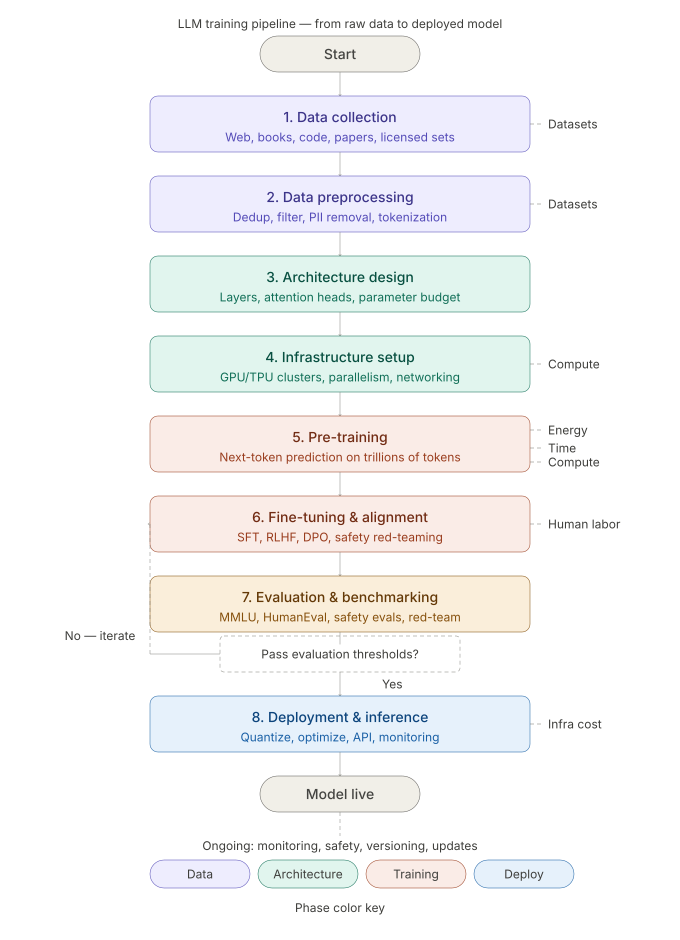
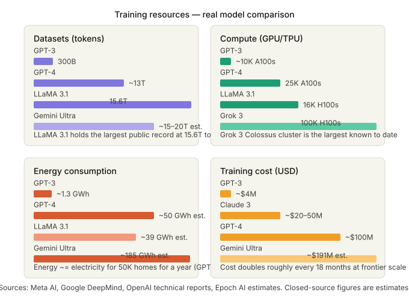

Each artifact below follows a consistent structure to demonstrate not only the work delivered, but also its purpose, execution, and relevance to the pharmaceutical data science domain:
Introduction: A visual timeline that presents major milestones in the history of AI, designed for interactive exploration.
Description: This artifact showcases key milestones in AI development from the 1950s to the present. It highlights major achievements, influential figures, and paradigm shifts, including AI winters and the rise of deep learning.
Objective: To provide a clear, engaging historical overview of artificial intelligence that highlights its evolution and key contributors.
Process: Curated historical data from verified sources, structured events into a Google Sheet, and deployed the visualization via Knight Lab’s TimelineJS.
Tools/Technologies Used: TimelineJS, Google Sheets, HTML
Value Proposition: Enhances historical understanding for students, educators, and professionals by offering a centralized, interactive learning tool on AI development.
Introduction: This artifact presents a structured comparison of machine learning and deep learning through real-world use cases.
Description: Using a table-based analysis, the artifact outlines three application domains: medical diagnostics, disease progression prediction, and autonomous driving to highlight why either machine learning or deep learning is preferred. The table evaluates each approach based on suitability and explains why the alternative is less effective in context.
Objective: To provide practical guidance on selecting appropriate modeling approaches by contrasting their advantages, interpretability, and limitations in specific domains.
Process: Evaluated representative scenarios and mapped them into a structured comparison. Justified model selection by interpretability, data characteristics, and computational considerations.
Tools/Technologies Used: HTML table formatting for structured comparison
Value Proposition: This artifact equips practitioners with a clear understanding of the fundamental differences between machine learning and deep learning. By presenting contextual strengths and limitations, it helps data professionals make informed decisions about which modeling approach to use. The comparative format empowers users to evaluate factors like data size, interpretability, and complexity, ensuring the chosen method aligns with the problem’s requirements and constraints.
| Real-world Application | Why the Approach is Suitable | Why the Other Approach is Not Suitable |
|---|---|---|
| Logistic Regression Medical diagnostics: Predict whether a tumor is benign or malignant |
Highly interpretable, critical in clinical trials; regulators like FDA need transparency into how features contribute to decisions | Deep learning models are black-box, require more data and computation; unnecessary for small, structured datasets |
| Linear Regression Predict disease progression and its relation to prognostic factors |
Works well with small datasets common in clinical trials; interpretable relationships between variables and outcomes | Deep learning may overfit small datasets and lacks clear interpretation of prognostic factors |
| Convolutional Neural Networks (CNNs) Autonomous vehicles and computer vision tasks |
Efficient for processing raw, high-dimensional image data; enables real-time, scalable, and accurate object recognition | Machine learning requires pre-extracted features and cannot process raw image/video data directly |
Introduction: This artifact illustrates how I used a customized chatbot which is developed by my instructor to understand machine learning training methods in an engaging and interactive way. It demonstrates how complex concepts can be demystified through conversational learning and self-guided inquiry.
Description: By interacting with a specially designed AI chatbot, I explored foundational topics in machine learning such as supervised, unsupervised, and reinforcement learning. The chatbot served as a knowledgeable guide, responding to my structured questions and offering personalized explanations that helped me build a cohesive understanding of how different models are trained and optimized. This approach transformed abstract theory into tangible learning moments through dialogue.
Objective: To showcase how AI-powered tools like chatbots can make technical learning more approachable, and to document my learning journey in mastering core machine learning training concepts through conversational exploration.
Process: I began with a list of key questions—such as how supervised learning models are trained or how algorithms impact training processes—and posed them sequentially to the chatbot. As I received responses, I reflected, synthesized the information, and adapted my follow-up questions to deepen understanding. This iterative Q&A approach led to a meaningful and personalized learning experience that mimicked human tutoring.
Tools/Technologies Used: Instructor-developed AI chatbot hosted on SchoolAI platform; web-based interaction through browser interface
Value Proposition: This artifact demonstrates the power of adaptive learning through AI. It provides a compelling example of how educators can design guided chatbot interactions to enhance student comprehension, especially for complex, multi-layered subjects like machine learning. For learners, it offers a model of active, question-driven engagement—showing that even technical material becomes digestible when explored through personalized, conversational scaffolding.
What I Learned About Machine Learning Training Methods
Through my dialogue with the chatbot, I developed a practical understanding of how machine learning models are trained. I learned that supervised learning depends on labeled datasets where models map inputs to known outputs; unsupervised learning finds patterns or clusters in unlabeled data; and reinforcement learning teaches agents through feedback from rewards and penalties. I also explored the vital role of algorithms, such as gradient descent, in optimizing models by adjusting their parameters over time.
I discovered that training a machine learning model involves several essential steps: data preprocessing, model selection, training, and evaluation. Repetition—through epochs and batch learning—enables the model to generalize better from examples and improve performance with each pass. These concepts, once intimidating, became much clearer through interactive explanation.
How I Used the Chatbot to Learn
The chatbot served as both a mentor and a thought partner. I initiated the session with specific questions and followed up based on the responses I received. For instance, after asking about supervised learning, I naturally moved on to unsupervised learning and reinforcement learning, deepening my understanding with each step. The chatbot offered simplified language and real-world analogies that made abstract ideas much easier to grasp.
More than just a question-answer tool, the chatbot helped me actively construct knowledge. By reflecting on its responses, I built connections between different learning paradigms and better understood how models are trained in practical settings. This method empowered me to take ownership of the learning process and encouraged deeper curiosity—something that static reading materials alone couldn’t provide.
Introduction: This artifact presents what I learned about essential practices in data processing and cleaning in machine learning applications. It demonstrates how interacting with an AI chatbot—the Data Challenge Scenarios Coach—allowed me to strengthen my understanding of how data quality directly impacts model performance.
Description: Through guided dialogue with the chatbot, I explored how missing values, outliers, and class imbalance affect model performance, and reviewed standard methods for handling them. The artifact highlights the importance of making careful decisions during preprocessing to ensure models learn effectively from the data provided.
Objective: To document my learning about data preprocessing techniques in machine learning, and to illustrate how conversational engagement with the Data Challenge Scenarios Coach can be used as a dynamic learning tool for building technical skills.
Process: I accessed the Data Challenge Scenarios Coach using a link provided by my instructor. The chatbot guided me through three scenarios where I needed to make decisions about training methods, share my reasoning, and reflect on trade-offs. For example, I worked through scenarios on handling missing values in student test data, addressing extreme outliers in transaction datasets, and managing class imbalance in loan approval predictions. For each scenario, the bot explained multiple approaches and implications. This iterative process of inquiry and reflection helped me connect technical steps to practical decision-making in machine learning workflows.
Tools/Technologies Used: Data Challenge Scenarios Coach (AI chatbot), web-based interaction platform, structured Q&A approach for scenario exploration.
Value Proposition: This artifact emphasizes the importance of strong data preprocessing in machine learning. For practitioners, it provides practical insights into managing messy, imbalanced, or extreme-value datasets. It showcases how conversational AI can support self-directed learning by making complex trade-offs explicit and by encouraging critical thinking about model preparation. By bridging technical detail with scenario-based learning, the artifact offers a holistic experience that strengthens both understanding and application of data processing concepts.
What I Learned About Data Processing
From the scenarios, I learned how preprocessing steps—like imputing missing values, transforming outliers, or rebalancing imbalanced data—directly affect model reliability and fairness. I gained a clearer understanding of how these choices influence the overall performance and interpretability of machine learning models. This perspective highlighted the importance of carefully evaluating preprocessing decisions instead of relying on a single standard approach.
How I Used the Chatbot to Learn
The chatbot acted as a coach, presenting both straightforward and nuanced answers. I guided the learning by posing practical scenarios and then deepened my understanding by asking follow-up questions about trade-offs and implications. This active engagement helped me link preprocessing techniques to broader themes of effective model building. The process mirrored a real-world data science workflow: encountering messy data, testing different solutions, and weighing trade-offs. Through conversational exploration, I built a clearer framework for handling technical challenges in data preparation.
This month highlights a series of notable AI releases and enhancements across healthcare, retail, and information technology. Unlike exploratory pilots, these applications are now being integrated directly into core business processes, producing measurable operational and financial outcomes.
Ambience Healthcare — Chart Chat: Ambience Healthcare introduced Chart Chat, an AI copilot embedded within Epic. The tool enables physicians to ask patient-specific questions in natural language and receive chart-aware, clinically grounded responses.
Business Impact
Saks Global — AI-Personalized Homepages: Saks Global rolled out AI-personalized landing pages across its e-commerce platforms. Early results report a 7% increase in revenue per visitor and nearly 10% higher conversion rates.
Business Impact
Microsoft — Copilot with GPT-5: On August 7, Microsoft released GPT-5 within its Copilot suite across Windows, Mac, and web platforms. The upgrade improves reasoning capabilities, supports longer context handling, and enhances accuracy in tasks such as analysis, drafting, and code generation.
Business Impact
The August 2025 AI releases demonstrate that AI is becoming business infrastructure. In healthcare, AI copilots are improving care delivery; in retail, personalization is translating into revenue; and in IT, GPT-5 is expanding enterprise productivity. The significance lies in the shift from experimentation to integration, with organizations now realizing tangible returns from AI-driven solutions.
Introduction: This artifact summarizes new and materially updated commercial AI applications released in the past month across healthcare, retail, and information technology. It focuses on how these releases are moving from experimentation to operational use, with emphasis on measurable effects on workflow, decisions, and business outcomes.
Description: The update covers one concrete example per industry and explains how each is transforming processes and decision-making. In healthcare, Ambience Healthcare’s Chart Chat integrates directly with Epic to answer chart-aware, patient-specific questions in natural language. In retail, Saks Global has rolled out AI-personalized homepages that report early lifts in revenue per visitor and conversion. In information technology, Microsoft has released GPT-5 inside Copilot across desktop and web, bringing deeper reasoning and longer context handling to everyday knowledge work.
Objective: To document and analyze how AI applications are being adopted across different industries, and to demonstrate the business impact of embedded AI systems. The goal is to provide leaders with a concise, report-style briefing on developments that directly affect workflows and decision-making.
Process: I researched recent commercial AI product announcements and updates from August 2025, focusing on healthcare, retail, and information technology. I selected one example from each sector—Ambience Healthcare’s Chart Chat, Saks Global’s AI-personalized homepages, and Microsoft’s Copilot with GPT-5. I then summarized what each tool does, why it matters, and how it impacts business processes. Finally, I structured the findings into a professional newsletter format for clarity and readability.
Tools/Technologies Used: Online industry news sources and company press releases for research; standard HTML for formatting the newsletter artifact; structured analysis methods to evaluate business impact across industries.
Value Proposition: This artifact demonstrates the ability to analyze how AI innovations translate into business value across multiple industries. It highlights measurable impacts such as revenue lift, improved productivity, and faster clinical decision-making. For organizations, the report shows how AI has shifted from pilot projects to integrated infrastructure, reinforcing the importance of adopting embedded and auditable AI solutions. For me, it reflects skills in market scanning, structured analysis, and executive-ready communication.
Introduction: This artifact presents a structured overview of several widely used machine learning algorithms. The goal is to organize these algorithms into a side by side tabular framework that makes it easier to compare their learning types, application domains, and common use cases. By presenting the algorithms in a unified structure, the artifact supports a clearer conceptual understanding of how different machine learning techniques relate to one another and where they may overlap in practical applications.
Description: The artifact consists of a tabular framework that outlines eight machine learning algorithms and key characteristics associated with each one. The table allows readers to view the algorithms side by side and compare whether they are supervised or unsupervised, the domains where they are commonly applied, and example real world use cases. A short explanation is also included to summarize how each algorithm works. This structured presentation helps reveal both similarities and distinctions among algorithms while making the information easier to interpret at a glance.
Objective: The objective of this artifact is to create a clear and organized framework that supports comparative understanding of machine learning algorithms. By presenting algorithms in a side by side format, the artifact helps identify common application areas while also highlighting differences in learning approaches and functionality. The framework is designed to provide a quick reference that helps learners establish a general conceptual understanding of multiple machine learning algorithms.
Process: To develop this artifact, I first selected eight representative machine learning algorithms that cover different learning paradigms and application areas within artificial intelligence. I then analyzed each algorithm to determine its learning type, common application domains, example use cases, and fundamental working principle. After organizing this information, I designed a tabular structure using HTML to place the algorithms side by side for comparison. CSS styling was applied to improve readability and layout organization. This process allowed the information to be presented in a clear comparative format that highlights relationships, shared application areas, and key differences between algorithms.
Tools/Technologies Used: HTML and CSS were used to structure and present the artifact as a web-based document. An HTML table element was specifically used to create the tabular framework that organizes the machine learning algorithms into comparable categories. CSS styling supports readability and layout clarity, allowing the algorithm information to be displayed in a structured and visually organized format within the webpage.
Value Proposition: This artifact demonstrates how organizing machine learning knowledge into a structured tabular framework can improve conceptual clarity and comparative analysis. By presenting algorithms in a side-by-side view, the framework makes it easier to compare learning types, application domains, and use cases across different machine learning approaches. This format helps highlight common areas where multiple algorithms can be applied while also clarifying their distinct characteristics. As a result, the artifact provides a clear and efficient reference that supports quick understanding of each algorithm and assists learners or practitioners in forming a general conceptual foundation when exploring machine learning techniques.
| Algorithm | Algorithm Type | Application Domains | Example Applications | Brief Explanation |
|---|---|---|---|---|
| Decision Tree | Supervised | Tabular Data | Credit scoring, medical diagnosis, customer churn prediction | Creates a tree structure that splits data based on feature values to make classification or regression predictions. |
| Random Forest | Supervised | Tabular Data, Computer Vision | Fraud detection, disease prediction, recommendation systems | Builds many decision trees on random subsets of data and combines their outputs to improve accuracy and reduce overfitting. |
| Support Vector Machine (SVM) | Supervised | Tabular Data, Computer Vision, NLP | Spam detection, text classification, image recognition | Finds an optimal boundary that separates classes by maximizing the margin between different categories of data. |
| K-Means Clustering | Unsupervised | Tabular Data, Computer Vision | Customer segmentation, document clustering, image compression | Groups similar data points into clusters by minimizing the distance between points and their assigned cluster center. |
| Principal Component Analysis (PCA) | Unsupervised | Tabular Data, Computer Vision | Dimensionality reduction, feature extraction for image analysis | Transforms high dimensional data into fewer components that retain most of the original variance. |
| Convolutional Neural Network (CNN) | Supervised | Computer Vision | Image classification, medical image analysis, autonomous driving perception | Uses convolutional layers to automatically learn spatial patterns and hierarchical visual features from images. |
| Recurrent Neural Network (RNN) | Supervised | NLP, Time Series | Language modeling, speech recognition, stock forecasting | Processes sequential data by maintaining memory of previous inputs, enabling modeling of temporal relationships. |
| Generative Adversarial Network (GAN) | Unsupervised | Generative AI, Computer Vision | Image generation, data augmentation, synthetic media creation | Consists of a generator that creates synthetic data and a discriminator that evaluates it, improving both through adversarial training. |

Introduction: This artifact presents a visual explanation of neural network architecture through a diagram and supporting written interpretation. The purpose of the artifact is to strengthen my understanding of how data moves through a neural network during training and prediction, while also clarifying the functions of core components such as layers, neurons, weights, activation functions, loss functions, and optimization algorithms.
Description: The artifact centers on an SVG based neural network diagram that illustrates the full learning flow of a model. The visual shows the input layer, hidden layers, and output layer, along with the connections that represent weights between neurons. It also highlights how activation functions transform inputs, how loss functions measure prediction error, and how optimization algorithms adjust parameters during training. Together, the diagram and explanations create a step by step representation of the neural network learning process.
Objective: The objective of this artifact is to develop a clearer conceptual understanding of neural network architecture by presenting its key components in a visual and organized format. This artifact is intended to support quick comprehension of how each component contributes to forward propagation, error calculation, and parameter updating within a machine learning model.
Process: To create this artifact, I used an SVG diagram as the central visual foundation for the presentation. I first identified the major structural components that needed to be represented, including layers, neurons, weighted connections, activation stages, loss calculation, and optimization. I then organized the content so that the diagram could guide the explanation in a logical sequence from input to output and then through model improvement. This process helped me connect each visual element with its technical meaning and better understand how individual parts interact within the complete neural network workflow.
Tools/Technologies Used: SVG was used to create and display the neural network diagram as a scalable visual artifact. HTML was used to structure the portfolio content, and CSS was used to support layout, readability, and presentation of the diagram and explanatory text. The SVG format served as the main tool for building the flowchart style representation of the neural network architecture.
Value Proposition: This artifact provides a clear visual framework for understanding neural network architecture by combining diagram based learning with concise technical explanation. By presenting the model components in a connected flow, the artifact makes it easier to see how neurons, weights, activations, loss calculation, and optimization work together as part of one learning system. It supports side by side interpretation of structural elements and functional processes, helping establish a stronger general understanding of neural network behavior.
Introduction: This artifact presents a detailed visual explanation of how prominent generative AI large language models are trained and why their development requires substantial computational and financial resources. The purpose of the artifact is to strengthen my understanding of both the technical training pipeline and the scale of infrastructure, data, and optimization required to produce advanced language models. By combining process visualization with resource cost illustration, the artifact provides a broader perspective on the complexity of modern generative AI development.
Description: The artifact is built around two SVG based graphics. The first graphic illustrates the training workflow of large language models, showing the progression from data collection and preprocessing to tokenization, model training, loss calculation, backpropagation, parameter updates, evaluation, and fine tuning. The second graphic highlights the resource demands associated with training prominent generative AI models, including computing infrastructure, energy use, engineering effort, and financial cost. Together, these visuals create a more complete understanding of both how large language models are developed and why their creation is resource intensive.
Objective: The objective of this artifact is to create a clear and informative visual presentation that explains the full training process of large language models while also emphasizing the significant resource costs involved. This artifact is intended to support general understanding of the technical workflow behind model development and the practical constraints that shape real world generative AI systems.
Process: To create this artifact, I used two SVG graphics as the main visual foundation. I first identified the core stages of large language model training that should be represented, including data preparation, token based input processing, large scale training, error measurement, optimization, and evaluation. I then connected these stages to a second visual that focuses on the broader resource requirements behind model development, such as hardware scale, engineering coordination, and operational cost. Organizing the artifact in this way allowed me to link the technical learning process with the real world demands of training advanced generative AI systems. This process helped me better understand that model development is not only an algorithmic challenge but also a resource management challenge.
Tools/Technologies Used: SVG was used to create and display the two visual graphics as scalable diagrams within the portfolio. HTML was used to organize the artifact content into a structured web based format, and CSS was used to improve layout, readability, and visual presentation. The SVG files served as the primary tool for presenting both the training flow and the resource cost comparison in a clear graphical format.
Value Proposition: This artifact provides a side by side visual explanation of two essential aspects of large language model development: the training workflow and the resource cost behind it. By presenting these areas together, the artifact helps create a clearer overall picture of how generative AI models are built and what makes them expensive to produce. It allows viewers to quickly establish a general understanding of the technical stages involved while also recognizing the shared cost drivers that influence multiple prominent models. This integrated view supports both conceptual learning and practical awareness of the scale of modern AI development.


Introduction: This artifact presents a visual and structured study of explainable AI in relation to prominent large language models, including GPT, Claude, Gemini, and LLaMA. The artifact focuses on why AI explainability matters, what makes these models difficult to interpret, how leading AI organizations are working to improve transparency, and how validation methods and performance metrics support reliability and accountability. The purpose is to create a clear comparative view that helps organize complex ideas into an accessible format for technical learning and portfolio presentation.
Description: The artifact is designed as an infographic or slide style presentation supported by tables. It explains the meaning and importance of explainable AI, compares the major explainability challenges associated with large language models, summarizes current industry efforts to improve transparency, and documents how validation techniques and evaluation metrics are used to assess trustworthiness. Tables are used throughout the artifact to create a side by side view that makes similarities and differences across models easier to interpret.
Objective: The objective of this artifact is to document my learning about explainable AI and model accountability by organizing current challenges, evaluation practices, and industry solutions into a comparative framework. By using tables to compare models and techniques, the artifact is intended to support quick understanding of how explainability, validation, and performance measurement work together to strengthen trust in modern AI systems.
Process: To create this artifact, I first researched major challenges involved in making large language model decisions understandable, especially for GPT, Claude, Gemini, and LLaMA. I then organized the material into four core themes: the meaning and importance of explainable AI, common explainability barriers, validation and performance metrics, and current solutions used by leading AI organizations. After identifying the main concepts, I structured the content into tables so that each topic could be reviewed in a side by side format. This process helped me connect model transparency with practical evaluation methods and gave me a clearer understanding of how explainability contributes to trustworthy AI development.
Tools/Technologies Used: HTML and CSS were used to organize the artifact as a structured web based portfolio entry. HTML table elements were used as the main tool for building the comparative framework across models, challenges, validation methods, and explainability techniques. CSS supports readability, spacing, and layout so the information can be presented clearly in a professional infographic or slide style format.
Value Proposition: This artifact creates a side by side comparative view of explainability challenges, validation practices, and transparency strategies across leading large language models. The table based structure helps reveal common problem areas shared by GPT, Claude, Gemini, and LLaMA while also showing how organizations respond differently through documentation, interpretability research, evaluation systems, and governance practices. As a result, the artifact creates a clear view that helps quickly establish a general understanding of explainable AI and its role in building reliable and accountable models.
| Concept | Definition | Why It Matters | Relevance to Large Language Models |
|---|---|---|---|
| Explainable AI | Explainable AI refers to methods and practices that help people understand how an AI system produces outputs or decisions. | It supports transparency, accountability, safer deployment, and informed human oversight. | Large language models generate highly fluent outputs, but their internal reasoning is often difficult for users and developers to interpret directly. |
| Transparency | Transparency means making model behavior, limitations, intended uses, and evaluation results more visible. | It helps users judge whether a system is appropriate for a given task and risk level. | For generative AI, transparency is important because confident outputs can still contain errors, bias, or unsupported claims. |
| Accountability | Accountability involves documenting how systems are tested, monitored, and governed. | It improves trust and supports regulatory and organizational review. | Large language models are increasingly used in education, healthcare, business, coding, and decision support, where failures can have real consequences. |
| Model Family | Core Explainability Challenge | Why the Challenge Exists | Practical Impact |
|---|---|---|---|
| GPT | High model scale and layered behavior make it difficult to trace why a specific response was generated. | Outputs emerge from very large parameter interactions rather than transparent rule based logic. | Users may receive persuasive responses without a clear view of the internal basis for the answer. |
| Claude | Helpful conversational behavior can mask complex internal representations that are difficult to inspect directly. | Model behavior depends on distributed features and latent concepts that do not map neatly to human readable rules. | It can be hard to separate surface level explanation from actual internal model mechanisms. |
| Gemini | Multimodal capabilities increase interpretability difficulty because reasoning may involve text, image, and tool related signals. | More input types and system components create more pathways that influence outputs. | Explaining decisions consistently across modalities becomes more complex. |
| LLaMA | Open availability increases flexibility for research but also creates explainability challenges across many downstream fine tuned variants. | Different developers may adapt the model in different ways, reducing consistency in documentation and interpretability practice. | Understanding behavior may depend on the specific adapted version rather than only the base model. |
| Obstacle | Description | Why It Reduces Explainability |
|---|---|---|
| Model Complexity | Large language models contain massive numbers of parameters and distributed internal features. | There is no simple one to one path from input to output that a human can easily inspect. |
| Opaque Decision Processes | Models generate tokens through internal activations and probability distributions rather than explicit reasoning steps visible to users. | People may see the answer but not the true internal basis for that answer. |
| Emergent Behavior | New abilities can appear at scale in ways that are not fully predictable from smaller systems. | This makes behavior harder to explain before deployment. |
| Benchmark Limitations | Some evaluations can be incomplete, narrow, or affected by contamination. | Good benchmark scores do not always mean users can understand or trust individual decisions. |
| Regulatory Pressure | Organizations increasingly need to document model use, risk, limitations, and governance. | Insufficient explainability can make compliance and responsible deployment harder. |
| Validation Element | Purpose | Examples of Metrics | Contribution to Trust |
|---|---|---|---|
| Capability Evaluation | Measures how well the model performs intended tasks. | Accuracy, pass rate, benchmark score, task completion rate | Shows whether the model can reliably perform its target functions. |
| Factuality Evaluation | Assesses whether answers are correct, grounded, and non hallucinated. | Factual accuracy, hallucination rate, precision on fact seeking tasks | Supports confidence that outputs are not merely fluent but also dependable. |
| Safety Evaluation | Tests whether the model avoids harmful, biased, or policy violating outputs. | Safety violation rate, refusal quality, over refusal rate, toxicity score | Helps show that reliability includes behavioral safety, not just usefulness. |
| Robustness Evaluation | Examines consistency under adversarial prompts, edge cases, or distribution changes. | Jailbreak resistance, adversarial success rate, robustness score | Indicates whether the model remains dependable beyond ideal conditions. |
| Bias and Fairness Evaluation | Checks whether outputs show harmful stereotyping or uneven performance across groups. | Bias benchmark results, disparity measures, representational harm indicators | Supports accountability and more equitable deployment. |
| Calibration and Uncertainty | Evaluates whether confidence aligns with actual correctness. | Calibration error, confidence reliability, abstention quality | Improves trust because the model should signal uncertainty when unsure. |
| Organization / Model Family | Current Explainability or Transparency Efforts | How the Effort Improves Trust |
|---|---|---|
| OpenAI / GPT | Model behavior specifications, system cards, neuron explanation research, and evaluation frameworks. | These practices help explain intended behavior, document limitations, and create repeatable testing for capability and safety. |
| Anthropic / Claude | Mechanistic interpretability research, concept mapping, transparency hub, and public system cards. | These efforts aim to understand internal representations more directly while also disclosing evaluation results and model risks. |
| Google / Gemini | Model cards, responsible AI guidance, explainability tools, and lifecycle safety evaluations. | These practices support structured transparency about limitations, mitigation approaches, and safety performance. |
| Meta / LLaMA | Model transparency materials, responsible use guidance, system level documentation, and broad benchmark evaluation. | These approaches help users understand intended uses, evaluation scope, and safety considerations for open weight models. |
Introduction: This artifact presents a portfolio style comparative analysis of pretrained models across multiple AI domains, including natural language processing, generative AI, computer vision, and tabular learning. The artifact focuses on the practical challenge of selecting models that balance predictive performance, computational efficiency, and explainability. In real world deployment, the best model is not always the most accurate model. Organizations often need to consider model size, memory requirements, inference speed, transparency, and integration complexity before choosing a solution.
Description: The artifact is designed as a structured HTML portfolio entry that compares five pretrained models: DistilBERT, gpt-oss-20b, MobileNetV3 Large, EfficientNet B0, and TabPFN 2.5. The comparison is organized through a decision matrix and supporting tables so that trade offs can be reviewed in a side by side format. The artifact emphasizes explainability and deployment practicality in addition to benchmark performance.
Objective: The objective of this artifact is to document how pretrained models differ across domains and to show how model selection depends on the balance between quality, speed, size, and interpretability. By presenting these models in a single comparative framework, the artifact supports faster and more informed decision making for portfolio, academic, and business contexts.
Methodology: The models were selected to span multiple domains and deployment scenarios. DistilBERT and gpt-oss-20b represent language models with different goals, one optimized for efficient language understanding and the other for open weight reasoning and text generation. MobileNetV3 Large and EfficientNet B0 represent lightweight and accuracy focused vision models. TabPFN 2.5 was selected to represent the emerging tabular foundation model category. Data points were compiled from official model cards, research papers, and framework documentation. Because each domain uses different benchmark traditions, the matrix reports domain specific accuracy rather than forcing a misleading single cross domain score.
Tools/Technologies Used: HTML and CSS were used to create a web based portfolio artifact. HTML tables provide the main comparison structure, while CSS badges and status labels improve readability. The design is intended to resemble an infographic style portfolio entry that is easy to review quickly.
Value Proposition: This artifact creates a clear decision support view of how pretrained models compare when performance is not the only concern. It highlights that smaller or more efficient models may be better choices for mobile, edge, or low latency systems, while larger models may be more suitable for reasoning rich workflows. It also shows that explainability tends to vary by domain, with tabular and smaller encoder models often being easier to justify than large autoregressive systems.
| Selection Factor | Meaning | Why It Matters | Practical Impact |
|---|---|---|---|
| Performance | How well the model performs on its domain benchmark or task. | Higher performance can improve business value, prediction quality, and user trust. | Useful for applications where accuracy directly affects outcomes such as diagnostics, content understanding, or forecasting. |
| Model Size | The number of parameters or checkpoint size required to store and run the model. | Smaller models are often easier to deploy and cheaper to host. | Important for mobile, browser, edge, and resource constrained settings. |
| Inference Speed | How quickly the model produces outputs once deployed. | Fast inference improves responsiveness and user experience. | Critical for chat systems, live vision pipelines, and decision support systems. |
| Explainability | How easily people can understand, audit, or justify the model’s behavior. | Supports trust, governance, and responsible deployment. | Especially important in healthcare, finance, education, and regulated environments. |
| Integration Complexity | How difficult it is to fine tune, host, optimize, and maintain the model in a production workflow. | Even strong models may be impractical if infrastructure needs are too high. | Affects implementation time, maintenance cost, and portability. |
| Model | Domain | Model Size | Accuracy / Benchmark | Speed | Explainability | Additional Considerations | Best Fit |
|---|---|---|---|---|---|---|---|
| DistilBERT | NLP | 66M params | GLUE score: 77.0 | Fast 410s full STS-B CPU pass |
Moderate | 40% smaller and 60% faster than BERT; easier to deploy for classification and QA tasks. | Efficient text classification, sentiment analysis, lightweight NLP services |
| gpt-oss-20b | Generative AI | 20.9B total / 3.6B active | MMLU: 85.3 | Medium Positioned for low latency local use |
Low | Strong reasoning and generation; open weight flexibility; higher infrastructure and safety review needs. | Agentic workflows, local reasoning systems, advanced text generation |
| MobileNetV3 Large | Computer Vision | 5.48M params 21.1 MB |
ImageNet top 1: 75.274% | Very fast 0.22 GFLOPS |
Moderate | Designed for efficient mobile and edge inference; excellent when latency matters more than peak accuracy. | Mobile apps, embedded vision, lightweight image classification |
| EfficientNet B0 | Computer Vision | 5.29M params 20.5 MB |
ImageNet top 1: 77.692% | Fast 0.39 GFLOPS |
Moderate | Better accuracy than MobileNetV3 Large with a slightly higher compute cost. | Balanced vision applications where accuracy matters more than extreme efficiency |
| TabPFN 2.5 | Tabular | 42.9 MB checkpoint 18 to 24 layer transformer |
Strong benchmark leadership on tabular tasks Original TabPFN tuned classification normalized ROC AUC: 0.952 |
Very fast Single forward pass; TabPFN reported 5140× classification speedup |
Relatively high | Very strong for small to medium structured datasets; easier justification than large generative models. | Clinical risk scoring, finance, churn modeling, structured business prediction |
| Domain | Strongest Model in This Set | Main Strength | Main Limitation | Recommendation |
|---|---|---|---|---|
| NLP | DistilBERT | Strong efficiency with solid language understanding performance. | Less capable than larger reasoning or generative models on open ended tasks. | Choose for production text classification and extraction when low latency matters. |
| Generative AI | gpt-oss-20b | Higher reasoning and generation capacity with open weight flexibility. | Lower explainability and much higher compute requirements than encoder models. | Choose for advanced generation, reasoning, or agent based workflows that justify the extra cost. |
| Vision | EfficientNet B0 | Best accuracy among the selected compact vision models. | Higher compute demand than MobileNetV3 Large. | Choose when balanced accuracy and efficiency are needed. |
| Vision | MobileNetV3 Large | Excellent mobile efficiency and smaller compute footprint. | Slightly lower accuracy than EfficientNet B0. | Choose when device constraints or response speed are the top priority. |
| Tabular | TabPFN 2.5 | Very strong structured data performance with minimal tuning burden. | Best suited to small or medium tabular problems rather than very large scale tables. | Choose for tabular prediction problems where fast iteration and strong baseline performance are important. |
DistilBERT: DistilBERT offers one of the clearest efficiency focused trade offs in NLP. It preserves much of BERT’s language understanding while reducing size and inference cost. This makes it a strong choice for enterprise systems that need scalable text classification, document routing, or question answering without the overhead of larger models.
gpt-oss-20b: gpt-oss-20b is the most capable generative model in this comparison, but it also brings the highest complexity. It is valuable when reasoning quality, adaptability, and text generation matter more than strict explainability. It is less suitable in high accountability settings unless paired with strong evaluation, monitoring, and human review.
MobileNetV3 Large: MobileNetV3 Large is the most deployment friendly vision model in the set. It is especially attractive for edge and mobile use because it keeps computational demands low while still providing useful image classification performance.
EfficientNet B0: EfficientNet B0 provides a stronger accuracy profile than MobileNetV3 Large while remaining compact. It is a better option when a small increase in compute is acceptable in exchange for stronger predictive performance.
TabPFN 2.5: TabPFN 2.5 stands out because it reduces traditional tabular pipeline complexity. It is particularly compelling for domains such as healthcare, finance, and business analytics where structured datasets are common and explainability is important. Among the models in this artifact, it offers one of the best balances between speed, strong task performance, and practical interpretability.
This artifact shows that model selection is a trade off problem rather than a simple search for the highest benchmark score. DistilBERT is well suited for efficient NLP, gpt-oss-20b is strongest for flexible generative reasoning, MobileNetV3 Large is ideal for highly constrained vision deployment, EfficientNet B0 is a balanced vision option, and TabPFN 2.5 is especially promising for structured tabular prediction. The broader insight is that explainability and deployment practicality should be considered alongside accuracy whenever pretrained models are evaluated for real world use.